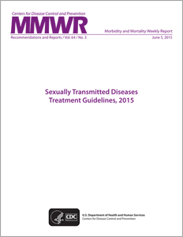

ShareCompartir
ShareCompartir

PLEASE NOTICE THE NEW 4th TAB ABOVE -- Resource Spotlight.
Prevalence of Pelvic Inflammatory Disease in Sexually Experienced Women of Reproductive Age — United States, 2013–2014 - MMWR January 27, 2017
Use of a 2-Dose Schedule for Human Papillomavirus Vaccination — Updated Recommendations of the Advisory Committee on Immunization Practices MMWR December 16, 2016
New Information about Antibiotic-Resistant Gonorrhea
- Cluster of Neisseria Gonorrhoeae Isolates with High-Level Azithromycin Resistance and Decreased Ceftriaxone Susceptibility Conference Abstract
- New Warning Signs that Gonorrhea Treatment May be Losing Effectiveness, Press release (September 21, 2016)
- Addressing the Threat of Drug-Resistant Gonorrhea, Fact Sheet
2015 STD Surveillance Report (October 19, 2016)
- Reported STDs in the United States, 2015 – fact sheet
- Reported STDs at Unprecedented High in the U.S. – media release
- Have STDs Reached Crisis Level? The Status Quo Is No Longer Enough – OpEd by NCHHSTP Director
Dear Colleague Letter - National Disease Intervention Specialist Recognition Day (October 7, 2016)
Procaine Penicillin G Shortage (September 19, 2016)
Zika Virus and Sexual Transmission (October 7, 2016)
French Disease to Ipergay: Syphilis networks in the PrEP era
STD Prevention Science Series Webinar
January 26, 2016 John Schneider, MD, MPH
Dr. John Schneider will describe syphilis networks of the most at-risk populations in the United States and in particular, younger Black men who have sex with men. He will present comparisons of these networks with HIV networks and the implications of co-infection. Dr. Schneider will contextualize both networks within the era of PrEP and describe ongoing and novel network interventions to limit the impact of ongoing domestic syphilis epidemics.
The reports below are the most recent editions of their kind.

STD Treatment Guidelines, 2015
Introducing Technology into Partner Services: A Toolkit for Programs
STD Risk and Oral Sex - This page provides an overview of health effects associated with oral sex.
AR Investment Map - This interactive tool shows CDC’s key investments to combat antibiotic resistance (AR), including resistant gonorrhea, across the nation.
Spotlight on CDC's STD Prevention Work - Learn about CDC’s Division of STD Prevention and the specific ways we’re working to prevent STDs and promote sexual health. There is also a high resolution version for printing.
Sexual Health and Your Patients: A Provider’s Guide - Primary care providers can use this guide to better integrate sexual health conversations and related preventive sexual health services into routine adolescent and adult visits. It features tables and charts to help providers easily find key information, and was pre-tested with primary care providers.
Expedited Partner Therapy (EPT): An Important STD Prevention Tool – An infographic to help patients and doctors understand how EPT works.
KABI Chronicles: The Edge Motion Comic Series - An original, comic-based, serial drama following the lives of nine fictional high school and college friends as they navigate young adulthood, while also educating viewers about HIV and STDs.
STD Prevention Success Stories - CDC works with local and state health departments to prevent the spread of STDs across the United States. These documents provide insight into innovative STD prevention programs and projects.
- Page last reviewed: November 4, 2016
- Page last updated: November 15, 2016
- Content source: